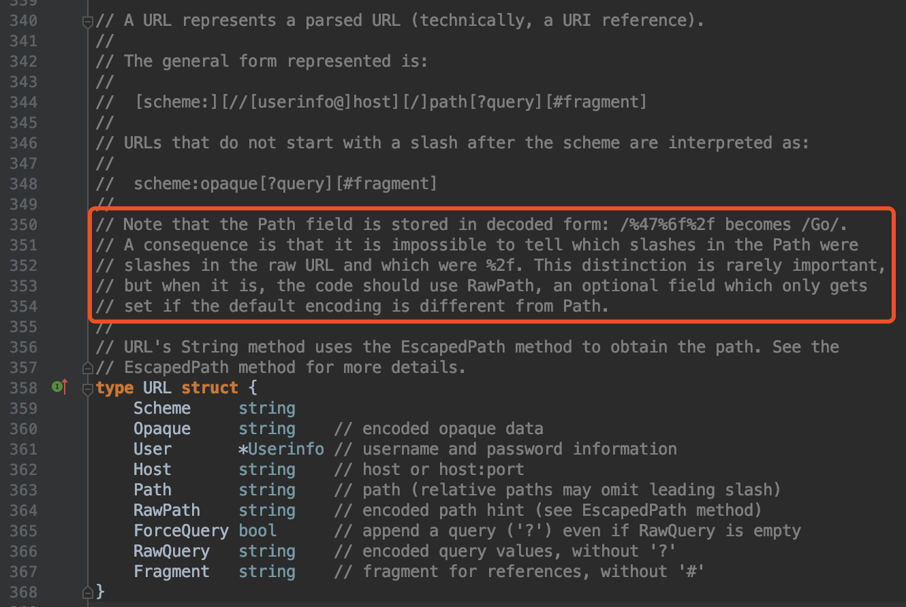
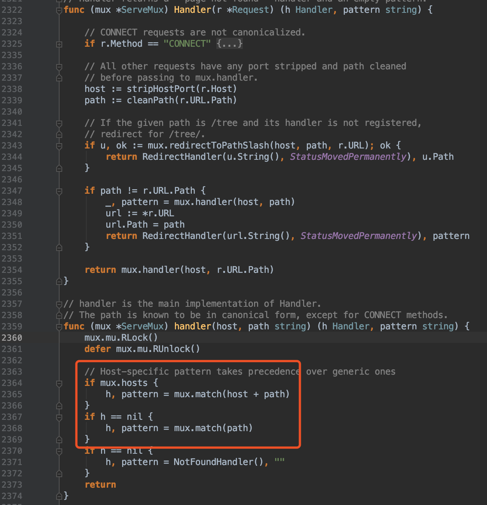
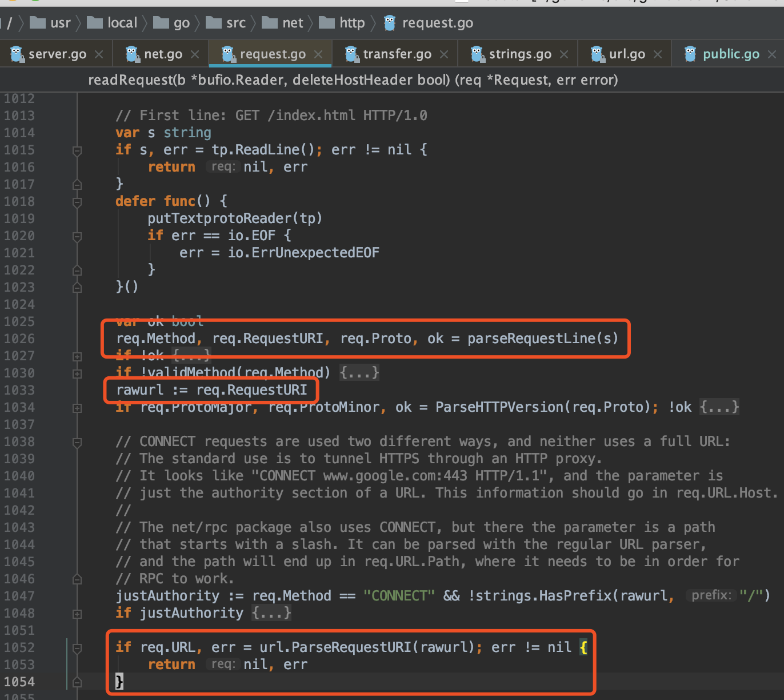
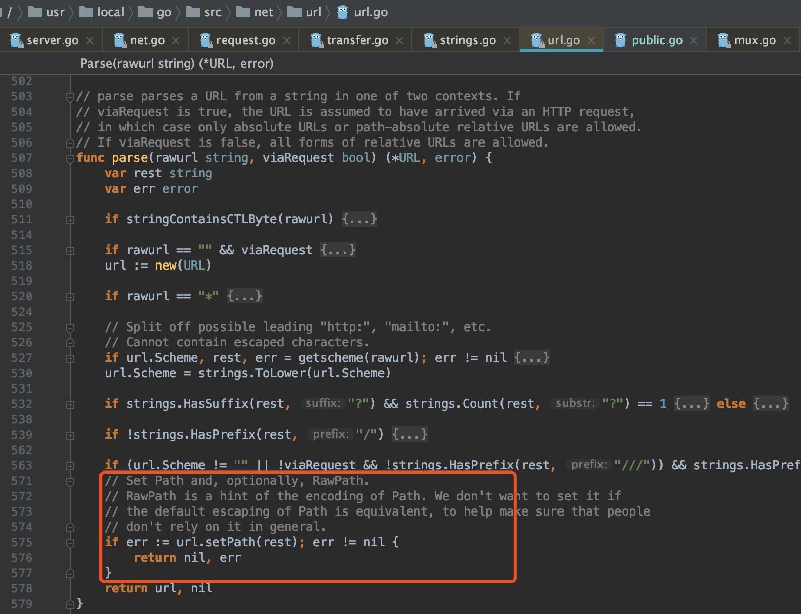
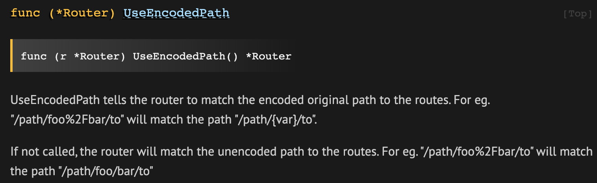
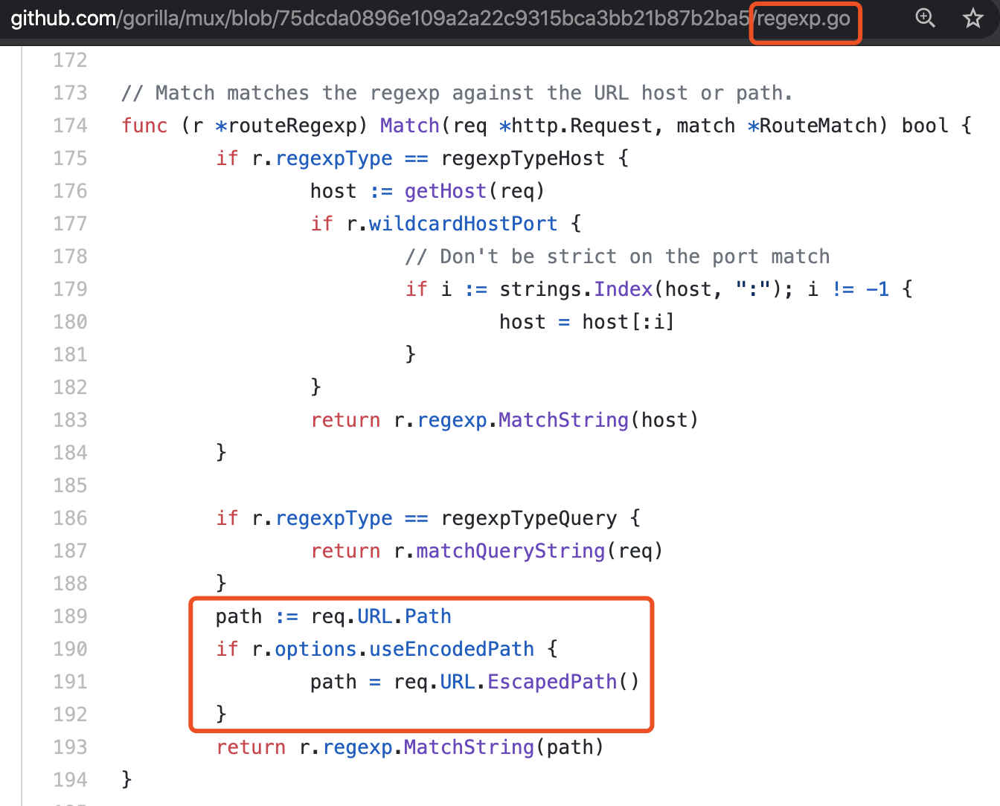
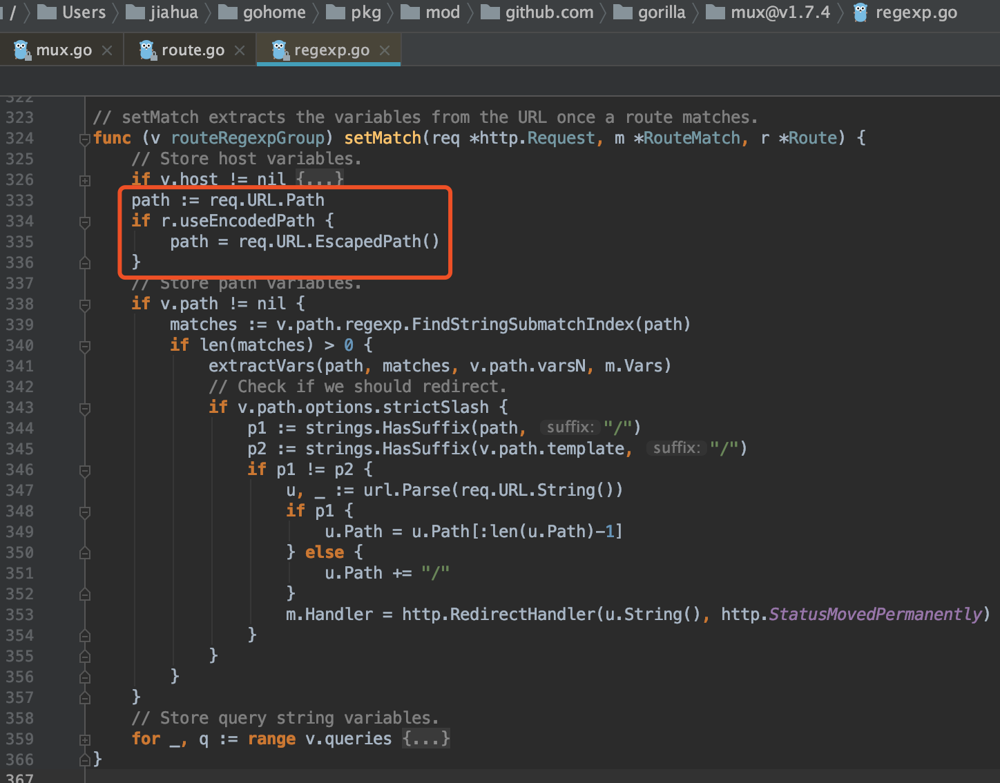
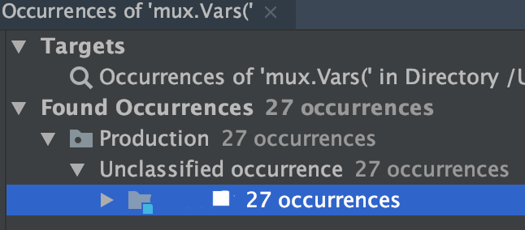

问题描述
- 有同事反馈Go项目的接口404了。看了下nginx日志，只有部分请求404了，404请求的显著特征是URL里有
%2F，也就是/的转义。 - 接口定义是这样的：
/api/xxx/{mid}/{uid}。mid、uid是URL path的一部分。从现象来看，程序没处理好转义字符，因为多了一个path部分，路由不匹配了，404。 - nginx的URL记录是
%2F，其实调用方传的是微信ID，比如IEd5W/jqsdF9qpuagQscEg==。调用方在发请求之前对ID已经做好了转义。
Go内置库：不区分%2F和/
An application cannot distinguish between “/” used as a path segment delimiter and “/” encoded in a path segment.
这个问题由来已久了，看着官方也不打算解决了，见这个issue：https://github.com/golang/go/issues/3659
If your app needs to assign special meaning, the
server can reprocess req.RequestURI as it sees fit, and the client can
issue requests using &url.URL{Opaque: rawURI}.
- reprocess req.RequestURI 就是让你别用内置路由库了。
- issue requests using &url.URL{Opaque: rawURI}. 试了，问题没解决。客户端不管怎么做，最终都是以HTTP协议输出的。
GET http://www.google.com/index.html HTTP/1.1服务端代码最终解析的还是中间的那段URL文本。照理就不通啊。
源码角度
url.URL的定义，明确指出Path字段存储的是decode之后的数据，所以%2F在这里已经被转义成了/，跟之前的Path意义完全不同了。

http.ServeMux也是依赖Path进行路由的。

而http.Request中的URL字段是怎么从HTTP协议中解析出来的呢，从http.ListenAndServe顺藤摸瓜。

最后还是在parse rawurl字符串，红框里会做path的转义操作，坑之所在。

使用Go内置的http路由，代码都写死了：URL解析代码中，Path一定是decode后的数据；路由代码中使用Path来路由。问题得不到解决。
gorilla/mux: UseEncodedPath()
http://www.gorillatoolkit.org/pkg/mux

使用这个方法就可以基于encoded Path进行路由了。例子如下：
package main
import (
"fmt"
"io/ioutil"
"log"
"net/http"
"net/http/httptest"
"github.com/gorilla/mux"
)
func main() {
router := mux.NewRouter().UseEncodedPath() # 创建router的时候设置
router.NewRoute().Name("test").Methods("GET").Path("/test/{name}").HandlerFunc(func(w http.ResponseWriter, r *http.Request) {
fmt.Fprint(w, mux.Vars(r))
})
server := httptest.NewServer(router)
defer server.Close()
res, err := http.Get(server.URL + "/test/bob%2Fvanderlen")
if err != nil {
log.Fatal(err)
}
greeting, err := ioutil.ReadAll(res.Body)
res.Body.Close()
if err != nil {
log.Fatal(err)
}
fmt.Printf("%s", greeting)
}
源码角度
通过flag来控制是否用encode过的还是decode过的Path。

还不完美
期望取到的数据是 IEd5W/jqsdF9qpuagQscEg==。然而，Path变量的取值仍然是根据标志位来的。

也就是说，即使让请求找到了路由，还是取不到真正的值。还得对URL Path进行手动decode才能用其中的值。让人崩溃，好多地方要改。

不完美，但至少不需要让调用者改代码了。以后接口设计还是把请求参数放Body里，稳一点。
Last modified on 2020-03-12